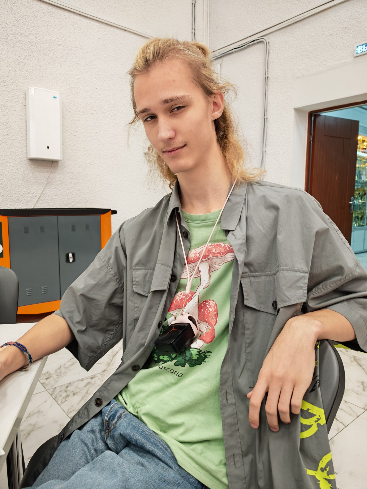

ALT Linux
Не просто ОС. Родной дом, смысл жизни и повод начать разговор, которого никто не просил.
● УСТАНОВЛЕН В СЕРДЦЕДва метра системного превосходства.
В сердце — ALT Linux. В голове — топология.
На паре — опять S.T.A.L.K.E.R.

LIVE FEED / EGOR_01+Некоторые выбирают операционную систему.
Егор выбирает любовь. И эта любовь — ALT.
$ cat /etc/egor-release
NAME="Егор"
CLASS="Системный администратор"
HEART="ALT Linux"
STATUS="Слишком крут для sudo"
$ uptime
18 лет в продакшене. Полёт нормальный.
Стабильный релиз.
Совершеннолетний root.
Без кепки.
С кепкой — вне спецификации.
Любовь, которую
не остановит kill -9.
Всё, что нужно для счастья.
И немного витой пары.
Не просто ОС. Родной дом, смысл жизни и повод начать разговор, которого никто не просил.
● УСТАНОВЛЕН В СЕРДЦЕДве синие панели. Тысяча возможностей. Мышка рядом исключительно для моральной поддержки.
● F10 — НЕ ВЫХОДПока ты ищешь Wi-Fi, Егор уже построил сеть, поднял маршрутизацию и назвал роутер своим именем.
● ПАКЕТЫ ПОД КОНТРОЛЕМОжидание тактильной диагностики…
Тело в колледже. Душа у костра.
Alt+Tab прокачан до уровня искусства.
Режим: свободный сталкер
Задание: пережить пару.
Награда: ещё одна пара.
После Зоны — тортики. У легенды есть мягкая сторона.
Каждый егорик — отдельный процесс.
Нажми на фото, чтобы изучить экземпляр.
Случайные фото за нажатие. Без лимита запусков.
ЕГОРИКОВ ЗА НАЖАТИЕ: 5